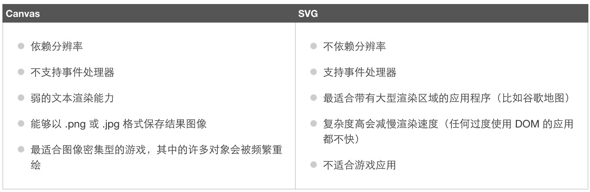

什么是SVG
- SVG 指可伸缩矢量图形 (Scalable Vector Graphics)
- 用于定义用于网络的基于矢量的图形
- 使用 XML 格式定义图形
- 图像在放大或改变尺寸的情况下其图形质量不会有损失
- SVG 是万维网联盟的标准
SVG优势
与其他图像格式相比(jpeg, gif),使用svg的优势在于：
- SVG 图像可通过文本编辑器来创建和修改
- SVG 图像可被搜索、索引、脚本化或压缩
- SVG 是可伸缩的
- SVG 图像可在任何的分辨率下被高质量地打印
- SVG 可在图像质量不下降的情况下被放大
使用svg 画图
SVG 与 Canvas两者间的区别
SVG 是一种使用 XML 描述 2D 图形的语言。
Canvas 通过 JavaScript 来绘制 2D 图形。
SVG 基于 XML，这意味着 SVG DOM 中的每个元素都是可用的。您可以为某个元素附加 JavaScript 事件处理器。
在 SVG 中，每个被绘制的图形均被视为对象。如果 SVG 对象的属性发生变化，那么浏览器能够自动重现图形。
Canvas 是逐像素进行渲染的。在 canvas 中，一旦图形被绘制完成，它就不会继续得到浏览器的关注。如果其位置发生变化，那么整个场景也需要重新绘制，包括任何或许已被图形覆盖的对象。
Canvas 与 SVG 的比较
